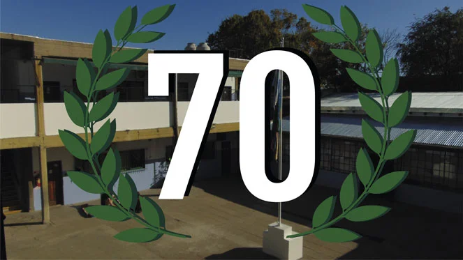
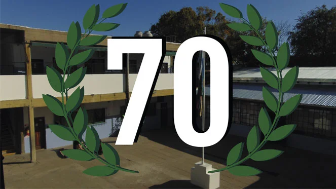

INSTITUTO ALMAFUERTE PILAR
Bienvenidos al Instituto Almafuerte, el primer colegio secundario de Pilar, que se destaca por su compromiso con una educación laica de calidad, tanto en el nivel primario como en el secundario. Fundado con la misión de brindar un espacio educativo inclusivo y pluralista, nuestro instituto se ha convertido en un referente en la comunidad. El Instituto Almafuerte es gestionado por una organización cooperadora, lo que nos permite fomentar la participación activa de padres, docentes y alumnos en la vida escolar. Esta estructura nos ayuda a construir un ambiente colaborativo y enriquecedor, donde cada voz cuenta y se trabaja en conjunto para el bienestar de nuestros estudiantes. Nos enorgullece ofrecer un enfoque educativo integral, que promueve no solo el desarrollo académico, sino también la formación de valores, habilidades sociales y el pensamiento crítico. Nuestro equipo docente, comprometido y apasionado, está dedicado a guiar a cada alumno en su proceso de aprendizaje, brindando las herramientas necesarias para que se conviertan en ciudadanos responsables y comprometidos con su entorno.


¿POR QUÉ ELEGIRNOS?
En nuestro colegio, ofrecemos diversas actividades extracurriculares que complementan la formación académica de los estudiantes. Por ejemplo, contamos con deportes, informática y electrónica, entre otros. Estas actividades permiten a los alumnos desarrollar habilidades prácticas, fomentar el trabajo en equipo y explorar sus intereses personales.DEPORTES
Los estudiantes tienen la oportunidad de practicar voleibol y baloncesto, además de participar en otras actividades deportivas que fomentan la salud y la diversión.INFORMÁTICA
La informática es una parte fundamental del aprendizaje. En la sala de computadoras, nos enfocamos en la ofimática, donde los estudiantes desarrollan habilidades clave en administración y organización.INGLÉS
En nuestra escuela, el aprendizaje del inglés es una prioridad en todos los niveles. Desde los más pequeños hasta los egresados.ELECTRÓNICA
Construcción de circuitos básicos hasta desarrollo de dispositivos complejos.ARTE
A través de clases creativas y prácticas, los estudiantes exploran distintas técnicas y estilos, desarrollando su sensibilidad estética y su capacidad de expresión.EXTRACURRICULARES
Complementamos el aprendizaje académico con una variedad de actividades extracurriculares que enriquecen la experiencia educativa.NOVEDADES
Bienvenidos a nuestra sección de noticias, donde encontrarás las últimas novedades sobre el Instituto, nuestras actividades extracurriculares y efemérides. Aquí compartimos eventos especiales, jornadas académicas y celebraciones que enriquecen nuestra comunidad. Desde ferias de ciencias hasta actividades culturales, cada ocasión es una oportunidad para que nuestros estudiantes brillen. 
